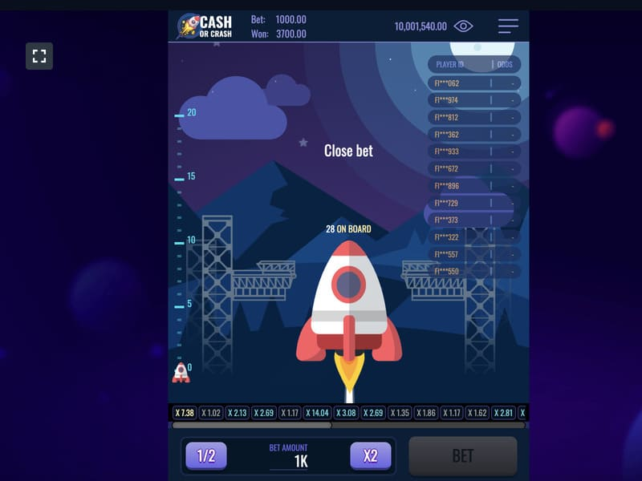
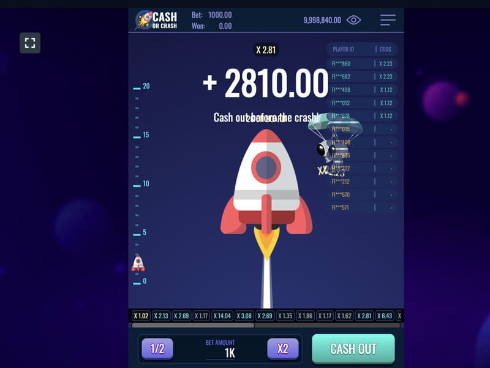

Jogar Cash or Crash num casino online

A evolução reuniu um portfólio único de jogos ao vivo. O jogo online Cash or Crash live destaca-se entre eles. Aqui os jogadores não só se encontrarão num enorme dirigível, como também o elevarão a uma maior altitude, subindo a escada de jogo. As regras são muito simples: tem de recolher bolas verdes, aumentando as suas hipóteses de chegar ao topo. O jogo será divertido e emocionante, porque a qualquer momento a bola pode cair vermelha, o que irá parar as rondas. Há muitas hipóteses de ganhar, uma vez que o jogo contém um escudo extra e uma percentagem de retorno ir realisticamente enorme de 99,59%.

Razões para a popularidade do Cash or Crash ao vivo
Os jogos de realidade virtual são um sucesso com os casinos online do mundo. Os jogadores destacam os muitos benefícios do Cash or Crash, incluindo
Os jogadores têm a oportunidade de multiplicar a sua aposta até 50.000 vezes, com as melhores estratégias disponíveis, dando-lhes uma taxa de retorno de 99,59%.
A jogabilidade tem lugar em tempo real, num estúdio de design bonito que se assemelha ao interior de um dirigível aéreo. Este desenho assegura o máximo empenho. As rondas são conduzidas por um apresentador, que apenas enfatiza a realidade e cria uma experiência imersiva. A motivação adicional é proporcionada pelo som e pelo acompanhamento musical.
O desenvolvimento com a ajuda de tecnologia inovadora torna possível divertir-se e testar os favores da Fortuna a partir de qualquer parte do mundo. Tudo o que precisa é de um aparelho e acesso à Internet.
O painel de controlo intuitivo está na parte inferior do ecrã, e os jogadores podem ler primeiro as instruções e regras detalhadas.
Os jogadores experimentam uma extravagância de emoções quando o desejo de alcançar o topo da escada está entrelaçado com o medo de perder os seus ganhos. O Provedor teve em conta estas emoções ao introduzir uma característica ótima para descontar metade dos seus ganhos.
Os participantes decidem por si próprios se querem continuar as rondas, parar ou tirar metade, o que também é uma vantagem. A capacidade de variar os totais e as táticas atrai muitos jogadores, tendo um efeito positivo na popularidade da ranhura de sucesso.
Como jogar e ganhar em Cache or Crash Live

O conjunto inicial da máquina da bola transparente pode parecer um vencedor garantido. Há uma ordem de magnitude de mais bolas verdes (19 verdes e 8 vermelhas), pelo que inicialmente as hipóteses de sair o vencedor são muito maiores. O jogador avança para o nível seguinte com um rolo verde. O jogo termina com uma bola vermelha. A bola de ouro fornece um escudo, por outras palavras, uma vida extra.
Se a rodada terminar com uma bola verde ou o desaparecimento de um escudo, há várias opções à escolha:
O jogador tem de carregar em Continue, Take Half, Take All, respetivamente, para selecionar. A cada passo acima, o multiplicador cresce também: o multiplicador começa em x1,2 e no último passo é x50000. Os ganhos podem ser um verdadeiro jackpot, e variam diretamente com o valor da aposta.
Estratégias e táticas em Cash or Crash

Quando se joga Cash or Crush Live, há limpas de uma certa cor no ecrã com uma percentagem. Esta figura corresponde à probabilidade de enrolar uma bola verde ou vermelha. Múltiplas rondas de sorteios reduzem consideravelmente a percentagem do rolo vencedor, mas aumentam o saldo do prémio. O fornecedor oferece uma enorme percentagem de retornos em Cash or Crash. Isto é possível através do emprego de uma estratégia eficaz:
Estas táticas garantem ganhos pequenos, mas frequentes. Na busca do grande dinheiro, existem outras estratégias a considerar, que podem ser combinadas ou alteradas, dependendo dos seus desejos e do orçamento atribuído. Estes incluem:
Ao aplicar qualquer tática, não se esqueça da informação perto dos dirigíveis. Dados os indicadores, não será difícil tomar a decisão correta: continuar, ficar ou tirar. Algumas decisões baixam o número da RTP. O limite máximo de apostas é limitado pelo criador, valendo a pena ter em conta quando se ganha, especialmente quando uma bola de ouro rola.
O objetivo de jogar Cash or Crash

Cash or Crash é um jogo bastante simples, mas é interessante em simultâneo. Não há características de bónus, mas as rondas são divertidas e permitem-lhe tomar decisões que afetam diretamente os seus ganhos. É por isso que os jogadores podem jogar tanto por diversão como por dinheiro.
A elevada percentagem de pagamento torna possível estar sempre no preto. Aqueles que desejam obter uma grande pontuação experimentarão muitas emoções de condução, uma vez que os riscos são consideráveis. No entanto, a vitória dos x50000 pode facilmente compensar as perdas.
Onde jogar Cash or Crash
Ao pensar onde jogar o jogo online Cash or Crash, preste atenção à escolha do casino online certo. O que significa o casino online correto? Trata-se de um casino justo onde:
Com estas duas condições em vigor, pode, sem hesitação, registar-se no sítio web do fornecedor de jogos de casino online e começar a jogar. Fique descansado que apenas são recomendados casinos online justos para jogar Cash or Crash, uma vez que é garantido o pagamento dos ganhos aos jogadores. Onde jogar Cash or Crash live? Dizemos-lhe.